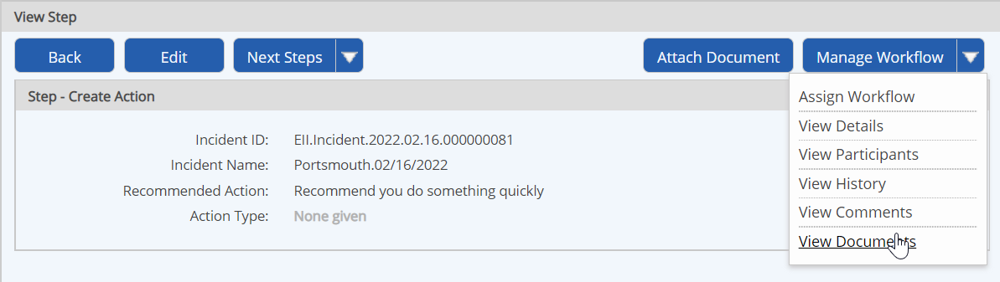
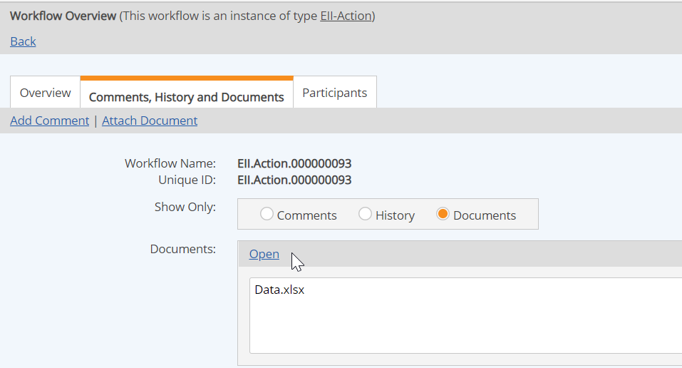

You can view documents associated with a workflow from the step completion form or from the Workflow Overview.
In order to view documents, you have View permission for that document or folder in the Documents library. In order to associate documents, you must also have the Associate Documents permission, granted through any role you are a member of in the workflow, or have Manage Workflows right.
To view attached documents from the step completion form:
Select View Documents from the Manage Workflow button.

Select the document from the dialog and click Open.
Choose whether to open the document directly or save it to your computer.
Click Close to close the dialog and return to the step completion form.
To view documents from Workflow Manager:
In Workflows Manager (Tasks and Workflows page), right click the workflow and choose Comments, History and Documents.
The Workflow Overview opens to the Comments, History and Documents tab. Select the Documents button to filter for documents only.
To view documents from the Workflow Overview:
Select the Comments, History and Documents tab, then the Documents button.
Select the document to view and click Open.

A dialog asks whether you want to open or save the file.
How you view documents depends on the type of file and the file associations on your computer. Microsoft Word or Excel files can be opened directly with Word or Excel. Other types of files may require you to launch the appropriate application yourself. You can save a copy of the file to your computer, then open it with the appropriate application.
To view a document directly:
When you receive the message asking whether you want to open the file or save it to your computer, choose Open.
A temporary copy will open for viewing.
To save a copy to your computer:
When you receive the message asking whether you want to open the file or save it to your computer, choose Save.
Choose a location to save it on your computer. You may then open the file from this location using the appropriate application.